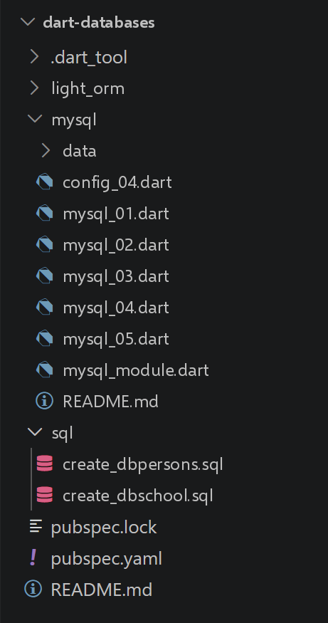
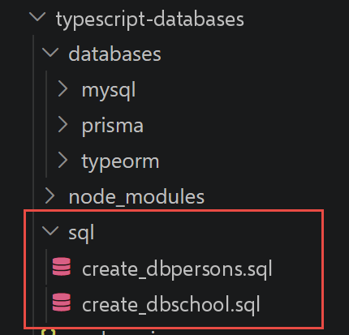
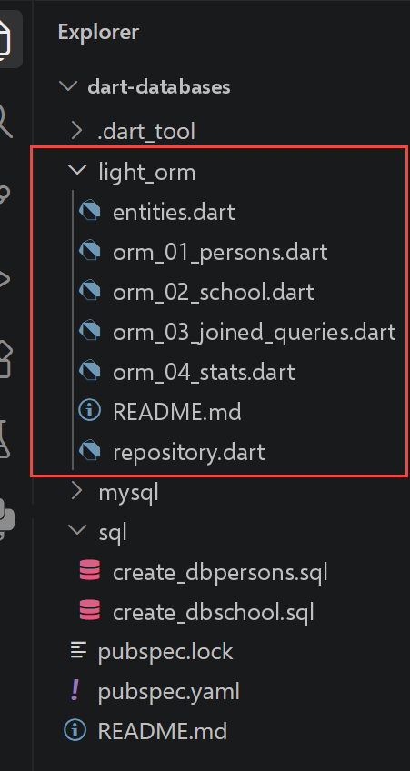

7. Acesso a bancos de dados

O curso de TypeScript dedica três capítulos ao acesso a um banco de dados MySQL: o driver nativo [mysql2], seguido de dois ORM ([TypeORM] e [Prisma]), usando o mesmo exemplo — dois bancos de dados, [dbpersons] (uma única tabela) e [dbschool] (quatro tabelas relacionadas: turmas, alunos, disciplinas e notas). Este capítulo é idêntico ao primeiro e, em seguida, reúne os dois capítulos de ORM em um só: Dart não tem um equivalente maduro de [TypeORM] ou [Prisma] para MySQL (veja o quadro lateral no final do capítulo) e, em vez de forçar uma correspondência artificial com um deles, construímos um “ORM leve” que demonstra o que um ORM realmente faz, escrevendo-o nós mesmos.
7.1. Acesso direto ao banco de dados

O pacote TypeScript [mysql2] não tem, no lado do Dart, um equivalente mantido pela própria equipe do MySQL. Uma versão inicial deste capítulo usava [package:mysql1] (pub.dev/packages/mysql1), um driver em Dart puro amplamente utilizado — MySQL —, mas ele se revelou incompatível com o MySQL 8.4 (a versão fornecida com o Laragon): até uma consulta tão simples quanto “select 1” falhava sistematicamente com o erro de protocolo “Got packets out of order”, um bug conhecido e não resolvido do pacote (problemas do GitHub adamlofts/mysql1_dart #112 e #161). Passamos, portanto, a usar [package:mysql_client_plus] (pub.dev/packages/mysql_client_plus), um fork mantido ativamente que foi testado com o MySQL 8.x e cuja API — [MySQLConnection.createConnection], [connection.connect], [connection.execute], [connection.close] — continua muito semelhante à do [mysql2].
7.1.1. Preparação do banco de dados [dbpersons]
O banco de dados dbpersons contém apenas uma tabela, persons, que usa o mesmo esquema do curso de Python (colunas id, first\_name, last\_name, age, com uma restrição de unicidade sobre o par (last\_name, first\_name)). O script sql/create_dbpersons.sql abaixo cria o banco de dados, o usuário da aplicação e a tabela e, em seguida, insere nela cinco pessoas arbitrárias:
-- create_dbpersons.sql
-- Recria o banco de dados [dbpersons] usado pelo capítulo "Accessing MySQL with the
-- native [mysql2] driver", com dados arbitrários (os originais do curso de 2020
-- Python/Flask não estão mais disponíveis).
--
-- Uso:
-- mysql -u root -p < create_dbpersons.sql
--
-- Cria o banco de dados, o usuário da aplicação [admpersons/nobody] (mesmas
-- credenciais do curso original) e a tabela [persons].
DROP DATABASE IF EXISTS dbpersons;
CREATE DATABASE dbpersons CHARACTER SET utf8mb4 COLLATE utf8mb4_unicode_ci;
CREATE USER IF NOT EXISTS 'admpersons'@'localhost' IDENTIFIED BY 'nobody';
GRANT ALL PRIVILEGES ON dbpersons.* TO 'admpersons'@'localhost';
FLUSH PRIVILEGES;
USE dbpersons;
CREATE TABLE persons (
id INT PRIMARY KEY,
first_name VARCHAR(30) NOT NULL,
last_name VARCHAR(30) NOT NULL,
age INTEGER NOT NULL,
UNIQUE (last_name, first_name)
);
-- dados arbitrários (mesmas pessoas dos exemplos do curso original)
INSERT INTO persons (id, first_name, last_name, age) VALUES
(1, 'Paul', 'Langevin', 48),
(2, 'Sylvie', 'Lefur', 70),
(3, 'Pierre', 'Nicazou', 35),
(4, 'Geraldine','Colou', 26),
(5, 'Paulette', 'Girond', 56);
Para criar este banco de dados (MySQL), você pode usar a ferramenta [HeidiSQL] do Laragon. Já a utilizamos antes.
- Em [1], inicie todos os serviços do Laragon. Isso iniciará o SGBD MySQL;
- em [2], acesse a ferramenta de gerenciamento de bancos de dados [HeidiSQL];
- Em [1-2], conecte-se ao MySQL;
Usando [1-2], execute os dois arquivos SQL do projeto, um após o outro:

Ainda no [HeidiSQL], pressione F5 para atualizar a exibição:
Agora estamos prontos para usar esses dois bancos de dados.
7.1.2. Script [mysql_01]
| // mysql_01.dart
// Porta databases/mysql/mysql-01.ts.
//
// Primeira etapa: conectar-se ao banco de dados MySQL [dbpersons] e depois
// desconectar-se.
//
// [escolha técnica] o pacote TypeScript [mysql2] não tem equivalente direto
// no lado Dart mantido pela própria equipe do MySQL. Uma primeira
// versão deste capítulo usava [package:mysql1] (pub.dev/packages/
// mysql1), um driver MySQL em Dart puro amplamente usado - mas que se revelou
// incompatível com o MySQL 8.4 (fornecido com o Laragon): até mesmo uma consulta
// tão trivial quanto "select 1" falhava sistematicamente com o
// erro de protocolo "Got packets out of order" (bug conhecido e não resolvido do
// pacote). Por isso aqui usamos [package:mysql_client_plus]
// (pub.dev/packages/mysql_client_plus), um fork ativamente mantido
// e testado com o MySQL 8.x, cuja API - [MySQLConnection.createConnection],
// [connection.connect], [connection.execute], [connection.close] - permanece muito
// próxima da do [mysql2].
import 'package:mysql_client_plus/mysql_client_plus.dart';
// conexão ao banco de dados MySQL [dbpersons]
// a identidade do usuário é (admpersons, nobody)
const String user = 'admpersons';
const String pwd = 'nobody';
const String host = 'localhost';
const int port = 3306;
const String database = 'dbpersons';
Future<void> main() async {
// [diferença com o TypeScript] não há tipo união "MySqlConnection |
// undefined" aqui: um campo nullable ([MySQLConnection?]) faz o mesmo
// papel - "ainda não conectado" é representado por [null], exatamente
// como "ainda não conectado" era representado por [undefined] no lado TS.
MySQLConnection? connection;
try {
print('Connecting to the MySQL DBMS...');
// [diferença com o TypeScript] ao contrário do mysql1 (e do mysql2),
// [mysql_client_plus] separa a CRIAÇÃO do objeto de conexão
// ([createConnection], que ainda não faz nenhuma troca de rede) do
// estabelecimento real da conexão ([connect], que negocia o
// protocolo com o servidor) - duas etapas bem distintas, em que
// o mysql1 as reunia em uma única chamada [MySqlConnection.connect].
// Só atribuímos [connection] (a variável nullable do bloco [finally])
// depois que [connect] tiver sucesso: se [connect] falhar, [connection]
// permanece [null] e o [finally] não tentará fechar uma conexão
// que nunca foi realmente aberta.
final newConnection = await MySQLConnection.createConnection(
host: host,
port: port,
userName: user,
password: pwd,
databaseName: database,
);
await newConnection.connect();
connection = newConnection;
// continuação
print(
"Successful MySQL connection to database=$database, host=$host as user=$user, passwd=$pwd",
);
} catch (error) {
// exibe o erro
print("The following error occurred: $error");
} finally {
// fecha a conexão, se ela foi aberta
if (connection != null) {
await connection.close();
}
}
}
|
Vamos comentar este código:
- linha 19: [import 'package:mysql_client_plus/mysql_client_plus.dart';]: o novo driver MySQL escrito inteiramente em Dart, que substitui [package:mysql1] — incompatível com o MySQL 8.4 (incluído no Laragon): até uma consulta tão trivial quanto “select 1” falhava sistematicamente com o erro de protocolo “Got packets out of order”, um bug conhecido e não resolvido do pacote (veja o comentário no início do arquivo).
- Linha 34: [MySQLConnection? connection;]: um campo NULLABLE tem exatamente a mesma finalidade que o tipo união [MySqlConnection | undefined] do TypeScript - [null] representa “ainda não conectado”, assim como [undefined] no TS.
- Linhas 47–55: [final newConnection = await MySQLConnection.createConnection(...); await newConnection.connect(); connection = newConnection;]: [mysql_client_plus] separa a CRIAÇÃO do objeto de conexão ([createConnection], que ainda não troca nenhum tráfego de rede) do estabelecimento efetivo da conexão ([connect], que negocia o protocolo com o servidor) — duas etapas distintas, enquanto [mysql1] (assim como [mysql2] no lado do TypeScript) as combinava em uma única chamada. [connection] (a variável nullable do [finally]) só é atribuída depois que [connect] é bem-sucedido, de modo que [finally] nunca feche uma conexão que não chegou a ser aberta.
- [try] / [catch] / [finally]: estrutura idêntica à da versão anterior — a conexão é sempre fechada em [finally], independentemente de ter ocorrido um erro.
O resultado da execução é o seguinte:
| Connecting to the MySQL DBMS...
Successful MySQL connection to database=dbpersons, host=localhost as user=admpersons, passwd=nobody
|
7.1.3. Script [mysql_02]
| // mysql_02.dart
// Porta databases/mysql/mysql-02.ts.
//
// Neste novo script, a conexão com o banco de dados é isolada em uma
// função.
import 'package:mysql_client_plus/mysql_client_plus.dart';
// conecta e depois desconecta (login, pwd) do banco de dados [database] no servidor
// [host]; lança uma exceção se houver um problema
Future<void> connect(String host, int port, String database, String login, String pwd) async {
MySQLConnection? cnx;
try {
// conexão - [createConnection] cria o objeto, [connect] realmente
// negocia com o servidor (veja o comentário em mysql_01.dart); só
// atribuímos [cnx] após um [connect] bem-sucedido, para que o [finally]
// nunca feche uma conexão que não foi estabelecida
final newConnection = await MySQLConnection.createConnection(
host: host,
port: port,
userName: login,
password: pwd,
databaseName: database,
);
await newConnection.connect();
cnx = newConnection;
print(
"Successful connection to database=$database, host=$host as user=$login, passwd=$pwd",
);
} finally {
// fecha a conexão, se ela foi aberta
if (cnx != null) {
await cnx.close();
print('Successful disconnection\n');
}
}
}
// - main
// credenciais de conexão
const String user = 'admpersons';
const String passwd = 'nobody';
const String host = 'localhost';
const int port = 3306;
const String database = 'dbpersons';
Future<void> main() async {
// conexão de um usuário existente
try {
await connect(host, port, database, user, passwd);
} catch (error) {
// exibe o erro
print('$error');
}
// conexão de um usuário inexistente
try {
await connect(host, port, database, 'xx', 'xx');
} catch (error) {
// exibe o erro
print('$error');
}
}
|
Vamos comentar este código:
- Linhas 10–36: [Future<void> connect(String host, int port, String database, String login, String pwd) async { ... }]: a conexão é encapsulada em uma função reutilizável, que lança uma exceção em caso de falha em vez de capturá-la ela mesma — cabe ao chamador decidir o que fazer com ela. Ela reutiliza o padrão “criação + [connect()]” de [mysql_01.dart]: [cnx] só é atribuída após um [connect] bem-sucedido.
- Linha 43: [const int port = 3306;]: [mysql_client_plus] exige uma porta EXPLÍCITA ([createConnection]), ao passo que [ConnectionSettings], em [mysql1], deduzia sozinho a porta padrão (3306).
- [main] chama essa função duas vezes, em dois blocos separados, [try] e [catch]: uma vez com identificadores válidos e outra com identificadores inválidos, para ilustrar os dois caminhos.
O resultado da execução é o seguinte:
| Successful connection to database=dbpersons, host=localhost as user=admpersons, passwd=nobody
Successful disconnection
MySQLServerException [1045]: Access denied for user 'xx'@'localhost' (using password: YES)
|
7.1.4. Script [mysql_03]
| // mysql_03.dart
// Porta databases/mysql/mysql-03.ts.
//
// Agora que sabemos nos conectar, emitimos instruções SQL na
// conexão: (re)criamos a tabela [persons] do banco de dados [dbpersons].
import 'dart:io';
import 'package:mysql_client_plus/mysql_client_plus.dart';
// executa uma consulta de atualização na conexão
Future<void> executeSql(MySQLConnection connection, String query) async {
await connection.execute(query);
}
// - main
// credenciais de conexão
const String id = 'admpersons';
const String pwd = 'nobody';
const String host = 'localhost';
const int port = 3306;
const String database = 'dbpersons';
Future<void> main() async {
// vamos passo a passo
late final MySQLConnection connection;
try {
// conexão - [package:mysql_client_plus], como o mysql1 antes dele,
// executa por padrão cada consulta em sua própria transação com
// commit automático (equivalente a AUTOCOMMIT=True no lado Python)
connection = await MySQLConnection.createConnection(
host: host,
port: port,
userName: id,
password: pwd,
databaseName: database,
);
await connection.connect();
} catch (error) {
print("The following error occurred: $error");
// [diferença com o TypeScript] `process.exit(1)` vira `exit(1)`
// (dart:io) - mesma semântica, mesmo código de saída do processo
exit(1);
}
// exclusão da tabela persons se ela existir
// se ela não existir, ocorrerá um erro - nós o ignoramos
try {
await executeSql(connection, 'drop table persons');
} catch (_) {
// ignorado - o [_] indica que não nos importamos com o valor da exceção
}
// criação da tabela persons
const query = 'create table persons (id int PRIMARY KEY, first_name varchar(30) NOT NULL, last_name varchar(30) NOT NULL, '
'age integer NOT NULL, unique(last_name,first_name))';
try {
await executeSql(connection, query);
print('$query: query succeeded');
} catch (error) {
print("The following error occurred: $error");
} finally {
await connection.close();
}
}
|
Vamos comentar este código:
- Linhas 10–12: [Future<void> executeSql(MySQLConnection connection, String query) async { await connection.execute(query); }]: uma função utilitária para executar um comando SQL de atualização (aqui, um DROP TABLE seguido de um CREATE TABLE) - [connection.execute(...)] substitui [connection.query(...)] do [mysql1] (mesmo papel, novo nome de método no lado do [mysql_client_plus]).
- Linha 41: [exit(1);] (de [dart:io]): equivalente a [process.exit(1)] — mesma semântica, mesmo código de saída do processo em caso de falha de conexão.
- Linha 47: [try { await executeSql(connection, 'drop table persons'); } catch (_) {}]: o fato de [_] ser passado como parâmetro de [catch] indica que o valor da exceção está sendo ignorado — a tabela pode simplesmente ainda não existir.
O resultado da execução é o seguinte:
| create table persons (id int PRIMARY KEY, first_name varchar(30) NOT NULL, last_name varchar(30) NOT NULL, age integer NOT NULL, unique(last_name,first_name)): query succeeded
|
7.1.5. Script [config_04]
| // config_04.dart
// Porta databases/mysql/config-04.ts.
//
// Configuração do script [mysql_04]: caminho do arquivo de comandos SQL
// e credenciais de conexão ao banco de dados [dbpersons].
//
// [diferença com o TypeScript] config-04.ts encontra a pasta do script
// com `dirname(fileURLToPath(import.meta.url))`. O Dart tem um equivalente direto e
// mais curto: [Platform.script] (dart:io) já é a
// URI do script em execução - basta resolver um caminho relativo
// a partir dele com [.resolve(...)], sem manipulação de strings. Nuance:
// [Platform.script] designa o script PRINCIPAL iniciado por `dart run`
// (mysql_04.dart), e não este arquivo - ao contrário de `import.meta.url`,
// específico de cada arquivo. O resultado é idêntico aqui, já que
// config_04.dart e mysql_04.dart ficam na mesma pasta.
import 'dart:io';
class Config {
final String commandsFilename;
final String host;
// [migração para mysql_client_plus] ao contrário do mysql1, cujo
// [ConnectionSettings] deduzia sozinho a porta padrão (3306),
// [MySQLConnection.createConnection] exige uma porta EXPLÍCITA - por isso
// a acrescentamos aqui à configuração.
final int port;
final String database;
final String user;
final String password;
const Config({
required this.commandsFilename,
required this.host,
required this.port,
required this.database,
required this.user,
required this.password,
});
}
Config configure() {
return Config(
// arquivo de comandos SQL, resolvido em relação a ESTE arquivo
commandsFilename: Platform.script.resolve('data/commands.sql').toFilePath(),
// credenciais de conexão ao banco de dados
host: 'localhost',
port: 3306,
database: 'dbpersons',
user: 'admpersons',
password: 'nobody',
);
}
|
Vamos analisar este código:
- linha 43: [Platform.script.resolve('data/commands.sql').toFilePath()] (de [dart:io]): o equivalente direto e mais curto de [dirname(fileURLToPath(import.meta.url))] no TypeScript - [Platform.script] já é o URI do script em execução; basta resolver um caminho relativo a partir dele.
- Nota importante: [Platform.script] refere-se ao script PRINCIPAL iniciado por [dart run] (neste caso, [mysql_04.dart]), e não necessariamente ao arquivo em que a expressão está escrita — diferentemente de [import.meta.url], que é próprio de cada arquivo. O resultado continua correto aqui, pois [config_04.dart] e [mysql_04.dart] residem na mesma pasta.
- linhas 18–28: [class Config { final String commandsFilename; ...; final int port; ...; const Config({required this... }); }]: uma classe imutável para agrupar a configuração, como a interface [Config] da versão TypeScript — com um campo [port] adicional, exigido explicitamente por [MySQLConnection.createConnection] (ao passo que [ConnectionSettings], do [mysql1], inferia automaticamente a porta padrão, 3306).
7.1.6. Script [mysql_module]
| // mysql_module.dart
// Porta databases/mysql/mysql-module.ts: funções reutilizáveis para
// executar uma lista (ou um arquivo) de comandos SQL em uma conexão
// MySQL aberta.
//
// [migração] este arquivo usava inicialmente [package:mysql1], que se revelou
// incompatível com o MySQL 8.4 (veja o comentário em pubspec.yaml). Ele
// foi portado para [package:mysql_client_plus] - veja abaixo a diferença
// que isso traz para o tratamento de transações.
import 'dart:io';
import 'package:mysql_client_plus/mysql_client_plus.dart';
// exibe o resultado de um comando SQL (resultado de um execute() de
// mysql_client_plus)
// - se [results.cols] não estiver vazio, era um SELECT: exibimos as
// colunas e depois as linhas;
// - caso contrário, era uma instrução de atualização (INSERT/UPDATE/DELETE/DDL):
// exibimos o número de linhas modificadas ([results.affectedRows],
// equivalente ao [rowcount] de um cursor).
void _displayInfo(IResultSet results) {
if (results.cols.isNotEmpty) {
// era um SELECT - [cols] descreve as colunas solicitadas
final titles = results.cols.map((c) => c.name).toList();
final header = titles.join(', ');
print(header);
print('*' * header.length);
for (final row in results.rows) {
print(titles.map((t) => row.colByName(t)).toList());
}
print('*' * header.length);
} else {
// nenhuma coluna descrita - instrução de atualização
print('number of modified rows: ${results.affectedRows}');
}
}
// usa a conexão aberta [connection]
// executa nessa conexão os comandos SQL contidos na lista
// [sqlCommands] (um comando por elemento; linhas vazias ou linhas
// iniciadas por # são ignoradas)
// - se verbose=true, cada execução de uma instrução SQL é seguida de uma
// exibição indicando seu sucesso ou falha;
// - se stop=true, a função para no 1º erro encontrado,
// caso contrário executa todos os comandos;
// - se withTransaction=true, qualquer erro cancela todas as instruções SQL
// executadas antes (rollback); caso contrário cada comando recebe commit
// de forma independente (comportamento padrão do MySQL, em AUTOCOMMIT);
// a função retorna uma lista [error1, error2, ...]
//
// [diferença com o TypeScript] o mysql2 expõe diretamente
// `connection.beginTransaction()/commit()/rollback()`. O [package:mysql1]
// (usado em uma primeira versão deste arquivo) não expunha esses
// métodos individualmente: a transação tinha de ser conduzida "à mão",
// enviando nós mesmos as instruções SQL [START TRANSACTION], [COMMIT] e
// [ROLLBACK]. O [package:mysql_client_plus] finalmente traz o equivalente direto
// do mysql2: `connection.transactional<T>((cnx) async { ... })` executa o
// callback em uma transação, faz commit (COMMIT) automaticamente se ele
// terminar normalmente e cancela (ROLLBACK) automaticamente se ele lançar uma
// exceção - não há mais instruções SQL de controle de transação para escrever
// nós mesmos.
Future<List<String>> executeListOfCommands(
MySQLConnection connection,
List<String> sqlCommands, {
bool verbose = false,
bool stop = true,
bool withTransaction = true,
}) async {
final errors = <String>[];
// executa de fato os comandos na conexão fornecida [cnx]: ela é
// ou a própria [connection] (sem transação), ou a conexão "de trabalho"
// que [transactional] entrega ao seu callback (com
// transação) - o laço é escrito uma única vez para os dois casos
Future<void> executeCommands(MySQLConnection cnx) async {
for (final rawCommand in sqlCommands) {
// remove os espaços em branco no início e no fim do comando atual
final command = rawCommand.trim();
// comando vazio ou comentário? passe para o próximo
if (command == '' || command[0] == '#') {
continue;
}
// execução do comando atual
try {
final results = await cnx.execute(command);
// nenhum erro
if (verbose) {
print('[$command]: Successful execution');
}
_displayInfo(results);
} catch (error) {
final msg = '$command: Error ($error)';
errors.add(msg);
if (verbose) {
print(msg);
}
// paramos?
if (withTransaction || stop) {
// com transação: relançamos o erro para que
// [connection.transactional] dispare o ROLLBACK - com
// [package:mysql_client_plus], é a EXCEÇÃO que comanda
// o cancelamento, e não uma simples saída do laço como no
// ROLLBACK manual da versão mysql1
if (withTransaction) rethrow;
return;
}
}
}
}
if (withTransaction) {
try {
await connection.transactional((cnx) => executeCommands(cnx));
} catch (_) {
// o erro já foi registrado em [errors] acima; nós o
// engolimos aqui para retornar normalmente a lista de erros ao
// chamador, exatamente como fazia a versão mysql1 (que nunca
// deixava uma exceção escapar desta função)
}
} else {
await executeCommands(connection);
}
return errors;
}
// usa a conexão aberta [connection]
// executa nessa conexão os comandos SQL contidos no
// arquivo de texto [sqlFilename] (um comando por linha)
Future<List<String>> executeFileOfCommands(
MySQLConnection connection,
String sqlFilename, {
bool verbose = false,
bool stop = true,
bool withTransaction = true,
}) async {
try {
final content = await File(sqlFilename).readAsString();
return await executeListOfCommands(
connection,
content.split('\n'),
verbose: verbose,
stop: stop,
withTransaction: withTransaction,
);
} catch (error) {
return ["The file $sqlFilename could not be processed: $error"];
}
}
|
Vamos comentar este código:
- linha 20: [void _displayInfo(IResultSet results)]: distingue um SELECT ([results.cols] descreve as colunas solicitadas) de um comando de atualização ([results.affectedRows], equivalente a [rowcount] em um cursor) - [results.cols]/[results.rows] substituem [results.fields] do [mysql1], e [row.colByName(t)] substitui o acesso [row.fields[t]].
- Linhas 61–67: [Future<List<String>> executeListOfCommands(MySQLConnection connection, List<String> sqlCommands, {bool verbose = false, bool stop = true, bool withTransaction = true}) async { ... }]: PARÂMETROS NOMEADOS com valores padrão, inalterados desde a versão [mysql1] — exatamente como os parâmetros opcionais do objeto de configuração TypeScript.
- Linhas 74–108: [Future<void> executeCommands(MySQLConnection cnx) async { ... }]: uma função LOCAL (aninhada), reutilizada tanto para o caso “com transação” (em que recebe a conexão de trabalho que [transactional] fornece ao seu callback) quanto para o caso “sem transação” (em que recebe [connection] diretamente) — assim, o loop de execução dos comandos é escrito uma única vez. Com uma transação, é uma EXCEÇÃO relançada ([rethrow]) que dispara o ROLLBACK, e não um simples encerramento do loop como no ROLLBACK manual da versão [mysql1].
- Linhas 110–118: [if (withTransaction) { try { await connection.transactional((cnx) => executeCommands(cnx)); } catch (_) { ... } }]: [mysql2] expõe diretamente [connection.beginTransaction()]/[commit()]/[rollback()]. [package:mysql1] não expunha esses métodos individualmente: era preciso controlar a transação “manualmente”, enviando você mesmo os comandos SQL [START TRANSACTION], [COMMIT] e [ROLLBACK]. [package:mysql_client_plus] finalmente oferece o equivalente direto de [mysql2]: [connection.transactional((cnx) async { ... })] executa o callback dentro de uma transação, confirma automaticamente (COMMIT) se ele terminar normalmente e desfaz automaticamente (ROLLBACK) se ele lançar uma exceção — não é mais necessário escrever seus próprios comandos SQL de controle de transação.
- Linhas 128–134: [Future<List<String>> executeFileOfCommands(...) async { ... }]: lê um arquivo ([File(sqlFilename).readAsString()]) e depois delega a [executeListOfCommands] — inalterado desde a versão [mysql1], mesma estrutura do TypeScript.
7.1.7. Script [mysql_04]
Este script principal coordena os dois scripts anteriores para executar o arquivo [data/commands.sql] (idêntico ao do curso de TypeScript), com ou sem transação, conforme o argumento de linha de comando fornecido.
| // mysql_04.dart
// Porta databases/mysql/mysql-04.ts.
//
// Script principal: executa o arquivo de comandos SQL
// [data/commands.sql], com ou sem transação conforme o argumento passado
// na linha de comando.
// dart run mysql_04.dart true (com transação)
// dart run mysql_04.dart false (sem transação)
import 'dart:io';
import 'package:mysql_client_plus/mysql_client_plus.dart';
import 'config_04.dart';
import 'mysql_module.dart';
Future<void> main(List<String> arguments) async {
final config = configure();
// - main
// verificação da sintaxe da chamada
bool error = arguments.length != 1;
String withTransactionText = '';
if (!error) {
withTransactionText = arguments[0].toLowerCase();
error = withTransactionText != 'true' && withTransactionText != 'false';
}
if (error) {
print('syntax: dart run mysql_04.dart true / false');
exit(1);
}
// cálculo de um texto
final withTransaction = withTransactionText == 'true';
final text = withTransaction ? 'with transaction' : 'without transaction';
// logs de tela
print('--------------------------------------------------------------------');
print('Executing the SQL file ${config.commandsFilename} $text');
print('--------------------------------------------------------------------');
// execução das instruções SQL do arquivo
MySQLConnection? connection;
List<String> errors = [];
try {
// conexão ao banco de dados - só atribuímos [connection] depois que [connect]
// tiver sucesso (veja o comentário em mysql_01.dart)
final newConnection = await MySQLConnection.createConnection(
host: config.host,
port: config.port,
userName: config.user,
password: config.password,
databaseName: config.database,
);
await newConnection.connect();
connection = newConnection;
// execução do arquivo de comandos SQL
errors = await executeFileOfCommands(
connection,
config.commandsFilename,
verbose: true,
stop: false,
withTransaction: withTransaction,
);
} catch (fatalError) {
print("The following fatal error occurred: $fatalError");
exit(1);
} finally {
if (connection != null) {
await connection.close();
}
}
// exibição do número de erros
print('--------------------------------------------------------------------');
print('Execution completed');
print('--------------------------------------------------------------------');
print('There were ${errors.length} error(s)');
for (final currentError in errors) {
print(currentError);
}
}
|
Vamos comentar este código:
- Linhas 14–28: [Future<void> main(List<String> arguments) async { ... }]: [arguments] recebe os parâmetros da linha de comando, como [process.argv.slice(2)] no lado do Node — aqui, espera-se um único argumento: [true] ou [false].
- Linhas 45–53: [final newConnection = await MySQLConnection.createConnection(...); await newConnection.connect(); connection = newConnection;]: a conexão usa o mesmo padrão de criação de [connect()], como mostrado em [mysql_01.dart], com parâmetros tirados de [config] (incluindo o novo campo [port]).
- Linhas 55–61: [executeFileOfCommands(connection, config.commandsFilename, verbose: true, stop: false, withTransaction: withTransaction)]: executa [data/commands.sql], com ou sem transação conforme o argumento — [dart run mysql_04.dart true] ou [dart run mysql_04.dart false].
Aqui estão duas execuções possíveis:
dart run mysql_04.dart true
| [insert into persons(first_name, last_name, age) values ('Sylvie','Lefur',70)]: Successful execution
number of modified rows: 1
[select first_name, last_name, age from persons]: Successful execution
first_name, last_name, age
**************************
[Paul, Langevin, 48]
[Sylvie, Lefur, 70]
**************************
xx: Error (MySQLServerException [1064]: You have an error in your SQL syntax; check the manual that corresponds to your MySQL server version for the right syntax to use near 'xx' at line 1)
--------------------------------------------------------------------
Execution completed
--------------------------------------------------------------------
There were 1 error(s)
xx: Error (MySQLServerException [1064]: You have an error in your SQL syntax; check the manual that corresponds to your MySQL server version for the right syntax to use near 'xx' at line 1)
|
dart run mysql_04.dart false
| Executing the SQL file C:\Data\st-2026\dev\dart-sept-2026-scripts\dart-databases\mysql\data\commands.sql without transaction
--------------------------------------------------------------------
[drop table persons]: Successful execution
number of modified rows: 0
[create table persons (first_name varchar(30) not null, last_name varchar(30) not null, age integer not null, primary key (last_name,first_name))]: Successful execution
number of modified rows: 0
[insert into persons(first_name, last_name, age) values('Paul','Langevin',48)]: Successful execution
number of modified rows: 1
[insert into persons(first_name, last_name, age) values ('Sylvie','Lefur',70)]: Successful execution
number of modified rows: 1
[select first_name, last_name, age from persons]: Successful execution
first_name, last_name, age
**************************
[Paul, Langevin, 48]
[Sylvie, Lefur, 70]
**************************
xx: Error (MySQLServerException [1064]: You have an error in your SQL syntax; check the manual that corresponds to your MySQL server version for the right syntax to use near 'xx' at line 1)
[insert into persons(first_name, last_name, age) values ('Pierre','Nicazou',35)]: Successful execution
number of modified rows: 1
[insert into persons(first_name, last_name, age) values ('Geraldine','Colou',26)]: Successful execution
number of modified rows: 1
[insert into persons(first_name, last_name, age) values ('Paulette','Girond',56)]: Successful execution
number of modified rows: 1
[select first_name, last_name, age from persons]: Successful execution
first_name, last_name, age
**************************
[Geraldine, Colou, 26]
[Paulette, Girond, 56]
[Paul, Langevin, 48]
[Sylvie, Lefur, 70]
[Pierre, Nicazou, 35]
**************************
[select last_name,first_name from persons order by last_name asc, first_name desc]: Successful execution
last_name, first_name
*********************
[Colou, Geraldine]
[Girond, Paulette]
[Langevin, Paul]
[Lefur, Sylvie]
[Nicazou, Pierre]
*********************
[select last_name,first_name,age from persons where age between 20 and 40 order by age desc, last_name asc, first_name asc]: Successful execution
last_name, first_name, age
**************************
[Nicazou, Pierre, 35]
[Colou, Geraldine, 26]
**************************
[insert into persons(first_name, last_name, age) values('Josette','Bruneau',46)]: Successful execution
number of modified rows: 1
[update persons set age=47 where last_name='Bruneau']: Successful execution
number of modified rows: 1
[select last_name,first_name,age from persons where last_name='Bruneau']: Successful execution
last_name, first_name, age
**************************
[Bruneau, Josette, 47]
**************************
[delete from persons where last_name='Bruneau']: Successful execution
number of modified rows: 1
[select last_name,first_name,age from persons where last_name='Bruneau']: Successful execution
last_name, first_name, age
**************************
**************************
--------------------------------------------------------------------
Execution completed
--------------------------------------------------------------------
There were 1 error(s)
xx: Error (MySQLServerException [1064]: You have an error in your SQL syntax; check the manual that corresponds to your MySQL server version for the right syntax to use near 'xx' at line 1)
|
7.1.8. Script [mysql_05]
| // mysql_05.dart
// Porta databases/mysql/mysql-05.ts.
//
// Consultas parametrizadas: inserção preparada simples e depois inserção em
// lote. Aqui recriamos a tabela [persons] com o esquema de coluna [id]
// (como no script mysql_03), para que este script seja independente do
// estado deixado por mysql_04.
import 'package:mysql_client_plus/mysql_client_plus.dart';
// a identidade do usuário
const String id = 'admpersons';
const String pwd = 'nobody';
// a máquina hospedeira do SGBD
const String host = 'localhost';
const int port = 3306;
// identidade do banco de dados
const String database = 'dbpersons';
// [diferença com o TypeScript] `type Person = [id: number, lastName: string,
// firstName: string, age: number]` (uma tupla TypeScript, nomeada mas ainda
// um simples array em tempo de execução) vira aqui um RECORD POSICIONAL do Dart 3
// (veja dart-fundamentals/dart3/dart3_01_records.dart): mesma ideia de um
// "pequeno grupo de valores tipados, sem classe para escrever", mas um tipo real
// por si só, distinto de uma [List].
typedef Person = (int id, String lastName, String firstName, int age);
Future<void> main() async {
// lista de pessoas (id, lastName, firstName, age)
final persons = <Person>[
for (var i = 0; i < 5; i++) (i, 'l0$i', 'f0$i', i + 10),
(40, "d'Aboot", "Y'éna", 18),
];
// outra lista de pessoas
final otherPersons = <Person>[
for (var i = 0; i < 5; i++) (i + 100, 'l1$i', 'f1$i', i + 20),
(200, "d'Aboot", "F'ilhem", 34),
];
// acesso ao SGBD
MySQLConnection? connection;
try {
// conexão - só atribuímos [connection] depois que [connect] tiver sucesso
// (veja o comentário em mysql_01.dart)
final newConnection = await MySQLConnection.createConnection(
host: host,
port: port,
userName: id,
password: pwd,
databaseName: database,
);
await newConnection.connect();
connection = newConnection;
// (re)criação da tabela com o esquema de coluna [id] (veja mysql_03)
await connection.execute('drop table if exists persons');
await connection.execute(
'create table persons (id int PRIMARY KEY, first_name varchar(30) NOT NULL, last_name varchar(30) NOT NULL, '
'age integer NOT NULL, unique(last_name,first_name))',
);
// exclusão dos registros existentes
await connection.execute('delete from persons');
// inserções pessoa a pessoa com uma consulta parametrizada -
// desestruturação do record posicional [person] diretamente no
// cabeçalho do for (veja dart-fundamentals/dart3/dart3_02_patterns.dart)
//
// [diferença com o TypeScript e com o mysql1] o mysql2 (e o mysql1, em
// uma primeira versão deste script) usam PLACEHOLDERS
// POSICIONAIS ("?", associados a uma LISTA de valores na mesma
// ordem). O [package:mysql_client_plus] funciona de outra forma: os
// placeholders são NOMEADOS (":id", ":last_name"...) e associados a um [Map]
// (nome do placeholder -> valor) - mais verboso de escrever aqui, mas
// torna cada consulta independente da ORDEM dos parâmetros.
for (final (idP, lastName, firstName, age) in persons) {
await connection.execute(
'insert into persons(id,last_name,first_name,age) values(:id,:last_name,:first_name,:age)',
{'id': idP, 'last_name': lastName, 'first_name': firstName, 'age': age},
);
}
// [diferença com o TypeScript] o mysql2 oferece
// `connection.query('insert ... values ?', [[[...],[...],...]])`, que
// constrói sozinho uma única consulta de várias linhas a partir de um
// array de arrays. O [package:mysql_client_plus] não tem tal
// equivalente (como o mysql1 antes dele): então construímos nós mesmos o texto SQL,
// com um grupo de placeholders NOMEADOS por linha (":id0",
// ":last_name0"... ":id1", ":last_name1"...), já que placeholders nomeados
// não podem ser repetidos na mesma consulta - uma única ida e volta
// pela rede, como na versão TypeScript.
final placeholderGroups = <String>[];
final values = <String, Object?>{};
for (var i = 0; i < otherPersons.length; i++) {
final (idP, lastName, firstName, age) = otherPersons[i];
placeholderGroups.add('(:id$i,:last_name$i,:first_name$i,:age$i)');
values['id$i'] = idP;
values['last_name$i'] = lastName;
values['first_name$i'] = firstName;
values['age$i'] = age;
}
await connection.execute(
'insert into persons(id,last_name,first_name,age) values ${placeholderGroups.join(',')}',
values,
);
// commit da transação - aqui cada consulta já recebeu
// commit automático (o MySQL está em modo AUTOCOMMIT por padrão, como o modo
// padrão mencionado no script mysql_03); portanto não há nada a confirmar
// explicitamente
print('${persons.length + otherPersons.length} persons inserted.');
} catch (error) {
print("The following error occurred: $error");
} finally {
if (connection != null) {
await connection.close();
}
}
}
|
Vamos comentar este código:
- linha 25: [typedef Person = (int id, String lastName, String firstName, int age);]: a tupla TypeScript, chamada [type Person = [id: number, lastName: string, firstName: string, age: number]] (um simples array em tempo de execução), torna-se um RECORD POSICIONAL no Dart 3 — um tipo de pleno direito, distinto de uma [List].
- Linhas 75–80: [for (final (idP, lastName, firstName, age) in persons) { await connection.execute('insert into persons(id,last_name,first_name,age) values(:id,:last_name,:first_name,:age)', {'id': idP, 'last_name': lastName, 'first_name': firstName, 'age': age}); }]: cada inserção preparada desconstrói diretamente o record posicional no cabeçalho do [for] (veja o capítulo “Novidades do Dart” 3.x) — com placeholders NOMEADOS ([:id], [:last_name]...) associados a um [Map], em vez dos POSICIONAIS ([?] + lista de valores) de [mysql1] e [mysql2].
- Linhas 90–99: [final placeholderGroups = <String>[]; final values = <String, Object?>{}; for (...) { placeholderGroups.add('(:id$i,:last_name$i,:first_name$i,:age$i)'); ... }]: [mysql2] oferece suporte direto à inserção em massa a partir de um array de arrays ([values ?] com [[[...],[...]]]). [package:mysql_client_plus] não tem esse equivalente (como [mysql1] antes dele): é preciso, portanto, construir você mesmo o texto SQL, mas com um grupo de placeholders — NOMEADOS e NUMERADOS — por linha ([:id0], [:last_name0]... [:id1], [:last_name1]...), já que placeholders nomeados não podem ser repetidos na mesma requisição — uma única ida e volta pela rede, como na versão TypeScript.
- Linha 93: [final (idP, lastName, firstName, age) = otherPersons[i];]: novamente uma decomposição de record posicional — necessária aqui para nomear individualmente cada placeholder ([:id0], [:last_name0]...) com base nos quatro campos do record, já que [mysql_client_plus] não oferece acesso posicional direto como [p.$1, p.$2...], que era usado na versão anterior deste script.
O resultado da execução é o seguinte:
Você pode verificar o resultado com o HeidiSQL do Laragon:

7.1.9. Conclusão
A migração do driver nativo é fiel ao TypeScript original. Após uma primeira tentativa com [package:mysql1] — abandonada por incompatibilidade com o MySQL 8.4 —, [package:mysql_client_plus] oferece, por fim, uma API ainda mais próxima de [mysql2] do que [mysql1] era: [connection.transactional(...)] é o equivalente direto de [beginTransaction()]/[commit()]/[rollback()], ao passo que [mysql1] teria exigido gerenciar manualmente a transação com os comandos SQL [START TRANSACTION], [COMMIT] e [ROLLBACK]. Resta uma diferença, ainda que mais sutil: as colunas DECIMAL ([subjects.coefficient], [grades.value] no banco de dados [dbschool]) exigem uma conversão explícita por meio de um pequeno helper [_decimal] ([typedColByName<String>(...)] e depois [num.parse(...)]), pois a conversão direta para [num] ou [double] não é suportada pelo driver para esse tipo SQL.
7.2. O ORM leve

O curso de TypeScript dedica dois capítulos separados ao acesso a bancos de dados por meio de um ORM ([Object-Relational Mapping]): [TypeORM], seguido de [Prisma], usando o mesmo esquema de exemplo. Ambos se baseiam em um princípio comum: descrever o esquema uma única vez (com decoradores do TypeORM em classes, ou um arquivo [.prisma] no Prisma) e deixar a ferramenta gerar, na inicialização ou durante a compilação, todo o código que traduz leituras/escritas de objetos em SQL — incluindo o carregamento dos relacionamentos entre tabelas.
Dart não tem um equivalente maduro e amplamente adotado dessas duas ferramentas para MySQL: existem bibliotecas ORM para Dart, mas elas são projetadas principalmente para Flutter/SQLite ([Drift], [Floor]) ou para arquiteturas diferentes - o próprio Prisma não oferece um cliente Dart. Em vez de forçar um mapeamento artificial do tipo “tal pacote Dart = TypeORM” ou “tal pacote = Prisma”, este capítulo adota uma abordagem diferente, mais sólida do ponto de vista didático: mostrar o que um ORM realmente faz, escrevendo-o você mesmo em uma versão deliberadamente mínima — daí o nome [light ORM].
7.2.1. As entidades: o arquivo [entities.dart]
| // entities.dart
// Porta as entidades TypeORM (databases/typeorm/entities/*.entity.ts):
// Person (banco de dados [dbpersons]) e SchoolClass / Student / Subject / Grade (banco de dados
// [dbschool]).
//
// [diferença fundamental com o TypeScript] as entidades do TypeORM são
// classes comuns DECORADAS (`@Entity`, `@Column`, `@ManyToOne`...):
// é o TypeORM, na inicialização, que LÊ esses decoradores (uma forma de
// reflexão/metaprogramação) para saber como ler/escrever cada
// campo em SQL e como carregar um relacionamento sob demanda. O Dart não
// tem equivalente utilizável de reflexão aqui (`dart:mirrors` foi
// abandonado para compilação web/AOT): portanto essas classes são apenas
// "sacos de campos" mutáveis simples, sem nenhuma anotação - é toda
// a pasta light_orm (repository.dart em particular) que,
// escrita à mão, faz o papel que a reflexão faz para o TypeORM. Veja
// o README.md desta pasta para a discussão completa.
class Person {
int id;
String lastName;
String firstName;
int age;
Person({required this.id, required this.lastName, required this.firstName, required this.age});
@override
String toString() => 'Person($id, $firstName $lastName, $age years old)';
}
class SchoolClass {
int id;
String name;
// relacionamento inverso (backref de Student.schoolClass) - NÃO carregado
// automaticamente: permanece vazio enquanto não chamarmos explicitamente
// uma consulta que o preencha (veja orm_03_joined_queries.dart)
List<Student> students = [];
SchoolClass({required this.id, required this.name});
@override
String toString() => 'SchoolClass($id, $name)';
}
class Student {
int id;
String lastName;
String firstName;
int classId;
// relacionamento N-1 com SchoolClass - null enquanto não tiver sido carregado
// explicitamente (o equivalente da opção `relations: { schoolClass: true }`
// do TypeORM, mas aqui tornada visível como um campo nullable comum)
SchoolClass? schoolClass;
List<Grade> grades = [];
Student({
required this.id,
required this.lastName,
required this.firstName,
required this.classId,
this.schoolClass,
});
@override
String toString() => 'Student($id, $firstName $lastName)';
}
class Subject {
int id;
String name;
num coefficient;
List<Grade> grades = [];
Subject({required this.id, required this.name, required this.coefficient});
@override
String toString() => 'Subject($id, $name, coefficient $coefficient)';
}
class Grade {
int id;
num value;
int studentId;
int subjectId;
Student? student;
Subject? subject;
Grade({
required this.id,
required this.value,
required this.studentId,
required this.subjectId,
this.student,
this.subject,
});
@override
String toString() => 'Grade($id, $value)';
}
|
Vamos comentar este código:
- As entidades do TypeORM são classes comuns DECORADAS ([@Entity], [@Column], [@ManyToOne]...): é o TypeORM que, na inicialização, lê esses decoradores (uma forma de reflexão) para determinar como ler/gravar cada campo em SQL e carregar um relacionamento sob demanda. Dart não tem um equivalente de reflexão que possa ser usado aqui ([dart:mirrors] está obsoleto para compilação web/AOT): essas classes são, portanto, simples “sacos de campos” mutáveis, sem nenhuma anotação.
- linha 29: [class SchoolClass { ...; List<Student> students = []; }], [class Student { ...; SchoolClass? schoolClass; List<Grade> grades = []; }] (linha 43): os relacionamentos são campos simples (coleção vazia ou referência nullable) que nunca são carregados automaticamente — é [repository.dart], escrito à mão, que desempenha o papel que a reflexão desempenha no TypeORM.
7.2.2. O repositório genérico: o arquivo [repository.dart]
| // repository.dart
// Um "ORM leve" escrito à mão: uma classe genérica [Repository] fortemente
// inspirada no Repository do TypeORM (`AppDataSource.getRepository(...)`,
// `.find()`, `.findOneBy()`, `.save()`, `.delete()`), mas construída sobre
// uma única tabela, sem decoradores nem carregamento automático de
// relacionamentos - veja o README.md para a discussão completa dessa escolha.
//
// [migração] este arquivo usava inicialmente [package:mysql1]; ele foi
// portado para [package:mysql_client_plus] (veja o comentário em
// pubspec.yaml). A mudança mais visível para o chamador é o
// estilo das consultas parametrizadas: o mysql1 usava PLACEHOLDERS
// POSICIONAIS ("?" + lista de valores em ordem), enquanto
// o [mysql_client_plus] usa placeholders NOMEADOS (":column" + um
// [Map] nome da coluna -> valor) - o que, aqui, se encaixa bem
// já que este repositório já manipula [Map<String, Object?>] de
// colunas.
import 'package:mysql_client_plus/mysql_client_plus.dart';
// [T]: o tipo da entidade gerenciada por este repositório (Person, SchoolClass...)
class Repository<T> {
final MySQLConnection connection;
// nome da tabela SQL
final String table;
// nome da coluna da chave primária
final String keyColumn;
// constrói uma entidade [T] a partir de uma linha de resultado SQL
final T Function(ResultSetRow row) fromRow;
// retorna as colunas SQL (nome da coluna -> valor) de uma entidade [T],
// chave primária INCLUÍDA (útil tanto para inserção quanto para
// atualização)
final Map<String, Object?> Function(T entity) toColumns;
// extrai o valor da chave primária de uma entidade [T]
final Object? Function(T entity) key;
Repository(
this.connection, {
required this.table,
required this.keyColumn,
required this.fromRow,
required this.toColumns,
required this.key,
});
// equivalente de `repo.find({ order: { column: 'ASC' } })`
Future<List<T>> findAll({String? orderBy}) async {
final sql = 'select * from $table${orderBy != null ? ' order by $orderBy' : ''}';
final results = await connection.execute(sql);
return results.rows.map(fromRow).toList();
}
// equivalente de `repo.findOneBy({ column: value })` - [conditions] é
// uma igualdade com "AND" em cada coluna fornecida; as chaves de [conditions]
// servem tanto de nome de coluna SQL quanto de nome de placeholder
// NOMEADO (":column") - portanto são reutilizadas como estão como
// parâmetros da consulta
Future<T?> findOneBy(Map<String, Object?> conditions) async {
final where = conditions.keys.map((c) => '$c = :$c').join(' and ');
final results = await connection.execute(
'select * from $table where $where limit 1',
conditions,
);
if (results.rows.isEmpty) return null;
return fromRow(results.rows.first);
}
// equivalente de `repo.findOneByOrFail(...)` / `findOneOrFail(...)`
Future<T> findOneByOrFail(Map<String, Object?> conditions) async {
final found = await findOneBy(conditions);
if (found == null) {
throw StateError('No row found in [$table] for $conditions');
}
return found;
}
// equivalente de `repo.save(entity)`: inserção se a chave ainda não existir,
// atualização caso contrário - exatamente o comportamento de "upsert" de
// `save()` no lado do TypeORM
Future<void> save(T entity) async {
final columns = toColumns(entity);
final currentKey = key(entity);
final alreadyExists = await findOneBy({keyColumn: currentKey}) != null;
if (alreadyExists) {
final toUpdate = columns.keys.where((c) => c != keyColumn);
final assignments = toUpdate.map((c) => '$c = :$c').join(', ');
// as colunas a atualizar, MAIS a chave (com o mesmo nome de placeholder
// da cláusula WHERE) - nenhuma colisão possível
// já que [keyColumn] foi justamente excluída de [toUpdate]
final values = <String, Object?>{
for (final c in toUpdate) c: columns[c],
keyColumn: currentKey,
};
await connection.execute('update $table set $assignments where $keyColumn = :$keyColumn', values);
} else {
final names = columns.keys.join(',');
final placeholders = columns.keys.map((c) => ':$c').join(',');
await connection.execute('insert into $table ($names) values ($placeholders)', columns);
}
}
// equivalente de `repo.delete({ column: value })`
Future<void> delete(Map<String, Object?> conditions) async {
final where = conditions.keys.map((c) => '$c = :$c').join(' and ');
await connection.execute('delete from $table where $where', conditions);
}
}
|
Vamos comentar este código:
- Linhas 20–33: [class Repository<T> { ...; final T Function(ResultSetRow row) fromRow; final Map<String, Object?> Function(T entity) toColumns; final Object? Function(T entity) key; ... }]: uma classe GENÉRICA, configurada pelo tipo de entidade [T], construída em torno de TRÊS FUNÇÕES fornecidas pelo chamador — como ler uma linha SQL, como gravá-la e qual é a sua chave primária. Isso é todo o “mapeamento objeto-relacional”, reduzido ao essencial; apenas o tipo da primeira função mudou desde a versão [mysql1] ([ResultSetRow] em vez de [ResultRow]).
- Linha 57: [final where = conditions.keys.map((c) => '$c = :$c').join(' and ');]: as chaves de [conditions] servem ao mesmo tempo como nome da coluna SQL e como nome do PLACEHOLDER NOMEADO ([:column]) - ao contrário de [mysql1], que usava placeholders POSICIONAIS ([?] mais uma LISTA de valores em ordem), [mysql_client_plus] espera um [Map] (nome do placeholder → valor), o que funciona muito bem, já que este repositório já manipula [Map<String, Object?>] para as colunas.
- Linhas 45–63: [Future<List<T>> findAll({String? orderBy}) async { ... }], [Future<T?> findOneBy(Map<String, Object?> conditions) async { ... }]: os equivalentes diretos de [repo.find(...)] e [repo.findOneBy(...)] do TypeORM - [execute()] substitui [query()], e [results.rows] contém as linhas do resultado (em vez da lista devolvida diretamente por [mysql1]).
- Linhas 78–96: [Future<void> save(T entity) async { ...; final alreadyExists = await findOneBy(...) != null; if (alreadyExists) { ... update ... } else { ... insert ... } }]: o comportamento de “upsert” de [repo.save(...)] — insere se a chave ainda não existir, atualiza caso contrário — permanece inalterado desde a versão [mysql1], exceto pelo estilo dos placeholders.
7.2.3. Script [orm_01_persons]
| // orm_01_persons.dart
// Porta databases/typeorm/typeorm-01.ts.
//
// Primeiro uso do "ORM leve": abrir a conexão e depois ler
// e escrever na tabela [persons] por meio do [Repository<Person>],
// sem escrever uma única linha de SQL NESTE arquivo (todo o SQL está
// em repository.dart, escrito uma vez por todas para todas as entidades).
import 'package:mysql_client_plus/mysql_client_plus.dart';
import 'entities.dart';
import 'repository.dart';
Future<void> main() async {
final connection = await MySQLConnection.createConnection(
host: 'localhost',
port: 3306,
userName: 'admpersons',
password: 'nobody',
databaseName: 'dbpersons',
);
await connection.connect();
print('Connection to [dbpersons] established.');
try {
final repo = Repository<Person>(
connection,
table: 'persons',
keyColumn: 'id',
// [migração para mysql_client_plus] o mysql1 já decodificava cada coluna
// para o tipo Dart nativo esperado ([row.fields['id'] as int]
// funcionava diretamente). O [package:mysql_client_plus] exige um acesso
// TIPADO explícito por coluna - [typedColByName<T>(name)] - que
// cuida ele mesmo da conversão; o [!] é seguro aqui, já que
// essas colunas são NOT NULL no esquema SQL.
fromRow: (row) => Person(
id: row.typedColByName<int>('id')!,
lastName: row.typedColByName<String>('last_name')!,
firstName: row.typedColByName<String>('first_name')!,
age: row.typedColByName<int>('age')!,
),
toColumns: (p) => {'id': p.id, 'last_name': p.lastName, 'first_name': p.firstName, 'age': p.age},
key: (p) => p.id,
);
// todas as pessoas, ordenadas por sobrenome
final all = await repo.findAll(orderBy: 'last_name asc');
print('Persons in the database:');
for (final p in all) {
print(' ${p.id} ${p.firstName} ${p.lastName} (${p.age} years old)');
}
// uma pessoa pela sua chave primária
final paul = await repo.findOneBy({'id': 1});
print('Person id=1: ${paul != null ? '${paul.firstName} ${paul.lastName}' : 'not found'}');
// inserção de uma nova pessoa (a entidade é uma classe comum:
// o construtor basta, sem necessidade de uma factory especial)
final newPerson = Person(id: 99, firstName: 'Ada', lastName: 'Lovelace', age: 36);
await repo.save(newPerson);
print('Person 99 inserted.');
// atualização
newPerson.age = 37;
await repo.save(newPerson);
print('After update, age=${(await repo.findOneBy({'id': 99}))?.age}');
// exclusão - devolvemos o banco de dados ao estado em que o encontramos
await repo.delete({'id': 99});
print('Person 99 deleted.');
} finally {
await connection.close();
}
}
|
Vamos comentar este código:
- Linhas 24–42: [final repo = Repository<Person>(connection, table: 'persons', keyColumn: 'id', fromRow: (row) => Person(...), toColumns: (p) => {...}, key: (p) => p.id);]: constrói um repositório para a entidade [Person], fornecendo-lhe as três funções esperadas — o único lugar do arquivo que “conhece” os detalhes das colunas SQL. [mysql1] já decodificava cada coluna para o tipo nativo Dart esperado ([row.fields['id'] as int] funcionava diretamente); [mysql_client_plus] exige um acesso TIPADO coluna a coluna — [typedColByName<T>(name)] — que cuida ele mesmo da conversão.
- O restante do script ([repo.findAll], [repo.findOneBy], [repo.save], [repo.delete]) não contém mais nenhuma linha de SQL — exatamente a mesma experiência que o TypeORM oferece no dia a dia, inalterada pela migração.
O resultado da execução é o seguinte:
| Connection to [dbpersons] established.
Persons in the database:
40 Y'éna d'Aboot (18 years old)
200 F'ilhem d'Aboot (34 years old)
0 f00 l00 (10 years old)
1 f01 l01 (11 years old)
2 f02 l02 (12 years old)
3 f03 l03 (13 years old)
4 f04 l04 (14 years old)
100 f10 l10 (20 years old)
101 f11 l11 (21 years old)
102 f12 l12 (22 years old)
103 f13 l13 (23 years old)
104 f14 l14 (24 years old)
Person id=1: f01 l01
Person 99 inserted.
After update, age=37
Person 99 deleted.
|
7.2.4. Script [orm_02_school]
| // orm_02_school.dart
// Porta databases/typeorm/typeorm-02.ts.
//
// Mapeamento de três entidades do banco de dados [dbschool] (SchoolClass, Student, Subject)
// e manipulações básicas (CRUD) por meio de seus repositórios.
import 'package:mysql_client_plus/mysql_client_plus.dart';
import 'entities.dart';
import 'repository.dart';
// lê uma coluna SQL DECIMAL/NUMERIC (aqui [subjects.coefficient]) como
// [num]. O [package:mysql_client_plus] pode converter um DECIMAL em
// [String] (qualquer tipo SQL pode ser lido como [String]), mas NÃO
// diretamente em [num] ou [double] - `typedColByName<num>(...)` então lança
// "Cannot convert MySQL type 246 to requested type num" (246 =
// NEWDECIMAL, o tipo interno do MySQL das colunas DECIMAL). Então lemos a
// coluna como [String] e depois a convertemos nós mesmos.
num _decimal(ResultSetRow row, String column) => num.parse(row.typedColByName<String>(column)!);
Repository<SchoolClass> _classRepo(MySQLConnection cnx) => Repository<SchoolClass>(
cnx,
table: 'classes',
keyColumn: 'id',
fromRow: (r) => SchoolClass(
id: r.typedColByName<int>('id')!,
name: r.typedColByName<String>('name')!,
),
toColumns: (c) => {'id': c.id, 'name': c.name},
key: (c) => c.id,
);
Repository<Student> _studentRepo(MySQLConnection cnx) => Repository<Student>(
cnx,
table: 'students',
keyColumn: 'id',
fromRow: (r) => Student(
id: r.typedColByName<int>('id')!,
lastName: r.typedColByName<String>('last_name')!,
firstName: r.typedColByName<String>('first_name')!,
classId: r.typedColByName<int>('class_id')!,
),
toColumns: (s) => {'id': s.id, 'last_name': s.lastName, 'first_name': s.firstName, 'class_id': s.classId},
key: (s) => s.id,
);
Repository<Subject> _subjectRepo(MySQLConnection cnx) => Repository<Subject>(
cnx,
table: 'subjects',
keyColumn: 'id',
fromRow: (r) => Subject(
id: r.typedColByName<int>('id')!,
name: r.typedColByName<String>('name')!,
coefficient: _decimal(r, 'coefficient'),
),
toColumns: (s) => {'id': s.id, 'name': s.name, 'coefficient': s.coefficient},
key: (s) => s.id,
);
Future<void> main() async {
final connection = await MySQLConnection.createConnection(
host: 'localhost',
port: 3306,
userName: 'admschool',
password: 'pwdschool',
databaseName: 'dbschool',
);
await connection.connect();
print('Connection to [dbschool] established.');
try {
final classRepo = _classRepo(connection);
final studentRepo = _studentRepo(connection);
final subjectRepo = _subjectRepo(connection);
// todas as classes
print('Classes:');
for (final c in await classRepo.findAll(orderBy: 'name asc')) {
print(' ${c.id} ${c.name}');
}
// todas as disciplinas, com seu coeficiente
print('Subjects:');
for (final s in await subjectRepo.findAll(orderBy: 'name asc')) {
print(' ${s.id} ${s.name} (coefficient ${s.coefficient})');
}
// adição de um novo aluno em [class1]
final class1 = await classRepo.findOneByOrFail({'name': 'class1'});
final newStudent = Student(id: 999, lastName: 'Curie', firstName: 'Marie', classId: class1.id);
await studentRepo.save(newStudent);
print('Student ${newStudent.firstName} ${newStudent.lastName} added to ${class1.name}.');
// releitura - [diferença com o TypeScript] typeorm-02.ts especifica
// `relations: { schoolClass: true }` para carregar a turma associada ao
// mesmo tempo que o aluno. [Repository.findOneBy] pode carregar SOMENTE
// a tabela [students] (sem join automático): então buscamos
// a turma nós mesmos, com uma segunda consulta explícita -
// exatamente a consulta extra que o TypeORM dispara por
// nós por trás de `relations: { schoolClass: true }`, mas aqui VISÍVEL.
final reread = await studentRepo.findOneByOrFail({'id': 999});
reread.schoolClass = await classRepo.findOneByOrFail({'id': reread.classId});
print('Re-read: ${reread.firstName} ${reread.lastName}, class=${reread.schoolClass!.name}');
// exclusão - devolvemos o banco de dados ao estado em que o encontramos
await studentRepo.delete({'id': 999});
print('Student 999 deleted.');
} finally {
await connection.close();
}
}
|
Vamos analisar este código:
- Linhas 10–17: [num _decimal(ResultSetRow row, String column) => num.parse(row.typedColByName<String>(column)!);]: [mysql_client_plus] pode converter uma coluna SQL DECIMAL (aqui [subjects.coefficient]) para [String] (qualquer tipo, como SQL, pode ser lido como [String]), mas não consegue convertê-la diretamente para [num] ou [double] - [typedColByName<num>(...)] resulta então em [MySQLProtocolException: Cannot convert MySQL type 246 to requested type num] (246 = NEWDECIMAL, o tipo interno do MySQL das colunas DECIMAL). A coluna é, portanto, lida como [String] e depois convertida manualmente.
- Três funções privadas — [_classRepo], [_studentRepo] e [_subjectRepo] — constroem, cada uma, um [Repository] para uma das três entidades de [dbschool]; apenas [_subjectRepo] usa [_decimal] para a coluna [coefficient].
- Linhas 99–100: [final reread = await studentRepo.findOneByOrFail({'id': 999}); reread.schoolClass = await classRepo.findOneByOrFail({'id': reread.classId});]: enquanto [typeorm-02.ts] especifica [relations: { schoolClass: true }] para carregar a turma associada junto com o aluno, [Repository.findOneBy] só consegue carregar a partir da tabela [students] (sem join automático) — por isso recuperamos a turma nós mesmos, com uma segunda consulta explícita: exatamente a consulta adicional que o TypeORM dispara nos bastidores, mas aqui tornada VISÍVEL.
O resultado da execução é o seguinte:
| Connection to [dbschool] established.
Classes:
1 class1
2 class2
Subjects:
1 subject1 (coefficient 1.0)
2 subject2 (coefficient 2.0)
Student Marie Curie added to class1.
Re-read: Marie Curie, class=class1
Student 999 deleted.
|
7.2.5. Script [orm_03_joined_queries]
| // orm_03_joined_queries.dart
// Porta databases/typeorm/typeorm-03-joined-queries.ts.
//
// Destaca as consultas SQL que precisam ser escritas para buscar
// informações distribuídas em várias tabelas - o que o TypeORM
// dispara por você por trás da opção `relations`, por meio de um SQL JOIN
// (`JOIN`). Ao contrário de orm_02_school.dart (que simulava o carregamento de um
// relacionamento com DUAS consultas separadas, para simplificar), este arquivo
// escreve os JOINs SQL REAIS - exatamente o que o TypeORM faz por
// baixo dos panos, mas totalmente visível.
//
// [diferença fundamental com o TypeScript] o TypeORM (como o SQLAlchemy, usado
// pelo curso original em Python) NÃO faz carregamento tardio (lazy loading) por padrão
// em entidades "clássicas": os relacionamentos a carregar devem ser solicitados
// explicitamente, com a opção `relations`. Nosso "ORM leve" leva
// esse princípio ainda mais longe, já que aqui não há NEM carregamento
// tardio NEM carregamento "mágico" de relacionamentos: cada join é
// SQL escrito à mão, linha por linha - o preço a pagar por não
// depender de nenhuma biblioteca de mapeamento objeto-relacional.
//
// [migração para mysql_client_plus] como em repository.dart, os
// placeholders posicionais ("?") do mysql1 viram placeholders
// NOMEADOS (":id", ":name"...), e o acesso às colunas de uma
// linha de resultado ([row.fields['x']] com o mysql1) vira uma chamada
// tipada ([row.typedColByName<T>('x')]).
import 'package:mysql_client_plus/mysql_client_plus.dart';
import 'entities.dart';
// lê uma coluna SQL DECIMAL/NUMERIC (aqui [grades.value] e
// [subjects.coefficient]) como [num]. O [package:mysql_client_plus] pode
// converter um DECIMAL em [String] (qualquer tipo SQL pode ser lido
// como [String]), mas NÃO diretamente em [num] ou [double] -
// `typedColByName<num>(...)` então lança "Cannot convert MySQL type 246 to
// requested type num" (246 = NEWDECIMAL, o tipo interno do MySQL das
// colunas DECIMAL). Então lemos a coluna como [String] e depois
// a convertemos nós mesmos.
num _decimal(ResultSetRow row, String column) => num.parse(row.typedColByName<String>(column)!);
// aluno por id, com sua turma (JOIN students/classes)
Future<Student> _studentWithClass(MySQLConnection cnx, int id) async {
final results = await cnx.execute(
'select s.id as s_id, s.last_name as s_last_name, s.first_name as s_first_name, s.class_id as s_class_id, '
'c.id as c_id, c.name as c_name '
'from students s join classes c on s.class_id = c.id where s.id = :id',
{'id': id},
);
final row = results.rows.first;
return Student(
id: row.typedColByName<int>('s_id')!,
lastName: row.typedColByName<String>('s_last_name')!,
firstName: row.typedColByName<String>('s_first_name')!,
classId: row.typedColByName<int>('s_class_id')!,
schoolClass: SchoolClass(id: row.typedColByName<int>('c_id')!, name: row.typedColByName<String>('c_name')!),
);
}
// turma por id, com a lista de seus alunos (JOIN classes/students)
Future<SchoolClass> _classWithStudents(MySQLConnection cnx, int id) async {
final results = await cnx.execute(
'select c.id as c_id, c.name as c_name, s.id as s_id, s.last_name as s_last_name, s.first_name as s_first_name '
'from classes c left join students s on s.class_id = c.id where c.id = :id',
{'id': id},
);
final firstRow = results.rows.first;
final schoolClass = SchoolClass(id: firstRow.typedColByName<int>('c_id')!, name: firstRow.typedColByName<String>('c_name')!);
schoolClass.students = [
for (final row in results.rows)
Student(
id: row.typedColByName<int>('s_id')!,
lastName: row.typedColByName<String>('s_last_name')!,
firstName: row.typedColByName<String>('s_first_name')!,
classId: schoolClass.id,
),
];
return schoolClass;
}
// turma por NOME, com a lista de seus alunos
Future<SchoolClass> _classWithStudentsByName(MySQLConnection cnx, String name) async {
final results = await cnx.execute(
'select c.id as c_id, c.name as c_name, s.id as s_id, s.last_name as s_last_name, s.first_name as s_first_name '
'from classes c left join students s on s.class_id = c.id where c.name = :name',
{'name': name},
);
final firstRow = results.rows.first;
final schoolClass = SchoolClass(id: firstRow.typedColByName<int>('c_id')!, name: firstRow.typedColByName<String>('c_name')!);
schoolClass.students = [
for (final row in results.rows)
Student(
id: row.typedColByName<int>('s_id')!,
lastName: row.typedColByName<String>('s_last_name')!,
firstName: row.typedColByName<String>('s_first_name')!,
classId: schoolClass.id,
),
];
return schoolClass;
}
// aluno por SOBRENOME, com sua turma
Future<Student> _studentByLastNameWithClass(MySQLConnection cnx, String lastName) async {
final results = await cnx.execute(
'select s.id as s_id, s.last_name as s_last_name, s.first_name as s_first_name, s.class_id as s_class_id, '
'c.id as c_id, c.name as c_name '
'from students s join classes c on s.class_id = c.id where s.last_name = :last_name',
{'last_name': lastName},
);
final row = results.rows.first;
return Student(
id: row.typedColByName<int>('s_id')!,
lastName: row.typedColByName<String>('s_last_name')!,
firstName: row.typedColByName<String>('s_first_name')!,
classId: row.typedColByName<int>('s_class_id')!,
schoolClass: SchoolClass(id: row.typedColByName<int>('c_id')!, name: row.typedColByName<String>('c_name')!),
);
}
// notas de um aluno, com a disciplina de cada nota (JOIN duplo)
Future<Student> _studentWithGradesAndSubject(MySQLConnection cnx, int id) async {
final studentRow = (await cnx.execute('select id, last_name, first_name, class_id from students where id = :id', {'id': id})).rows.first;
final student = Student(
id: studentRow.typedColByName<int>('id')!,
lastName: studentRow.typedColByName<String>('last_name')!,
firstName: studentRow.typedColByName<String>('first_name')!,
classId: studentRow.typedColByName<int>('class_id')!,
);
final results = await cnx.execute(
'select g.id as g_id, g.value as g_value, sub.id as sub_id, sub.name as sub_name, sub.coefficient as sub_coefficient '
'from grades g join subjects sub on g.subject_id = sub.id where g.student_id = :id',
{'id': id},
);
student.grades = [
for (final row in results.rows)
Grade(
id: row.typedColByName<int>('g_id')!,
value: _decimal(row, 'g_value'),
studentId: student.id,
subjectId: row.typedColByName<int>('sub_id')!,
subject: Subject(
id: row.typedColByName<int>('sub_id')!,
name: row.typedColByName<String>('sub_name')!,
coefficient: _decimal(row, 'sub_coefficient'),
),
),
];
return student;
}
// disciplina por NOME, com a lista de suas notas
Future<Subject> _subjectWithGradesByName(MySQLConnection cnx, String name) async {
final results = await cnx.execute(
'select sub.id as sub_id, sub.name as sub_name, sub.coefficient as sub_coefficient, g.id as g_id, g.value as g_value '
'from subjects sub left join grades g on g.subject_id = sub.id where sub.name = :name',
{'name': name},
);
final firstRow = results.rows.first;
final subject = Subject(
id: firstRow.typedColByName<int>('sub_id')!,
name: firstRow.typedColByName<String>('sub_name')!,
coefficient: _decimal(firstRow, 'sub_coefficient'),
);
subject.grades = [
for (final row in results.rows)
Grade(
id: row.typedColByName<int>('g_id')!,
value: _decimal(row, 'g_value'),
studentId: 0,
subjectId: subject.id,
),
];
return subject;
}
Future<void> main() async {
final connection = await MySQLConnection.createConnection(
host: 'localhost',
port: 3306,
userName: 'admschool',
password: 'pwdschool',
databaseName: 'dbschool',
);
await connection.connect();
try {
// aluno por id, com sua turma (join explícito)
print('student id=11 -----------');
final student11 = await _studentWithClass(connection, 11);
print('student={"id":${student11.id},"lastName":"${student11.lastName}","firstName":"${student11.firstName}"}');
print('student\'s class: {"id":${student11.schoolClass!.id},"name":"${student11.schoolClass!.name}"}');
// os alunos da mesma turma (nova consulta, com seu próprio
// join)
print('students in the same class:');
final studentsClass = await _classWithStudents(connection, student11.schoolClass!.id);
for (final s in studentsClass.students) {
print('student={"id":${s.id},"lastName":"${s.lastName}","firstName":"${s.firstName}"}');
}
// um aluno pelo seu sobrenome
print("student lastName='lastname2' -----------");
final byName = await _studentByLastNameWithClass(connection, 'lastname2');
print('student={"id":${byName.id},"lastName":"${byName.lastName}","firstName":"${byName.firstName}"}');
print('student\'s class: {"id":${byName.schoolClass!.id},"name":"${byName.schoolClass!.name}"}');
// as notas de um aluno, com a disciplina de cada nota
print('grades of student id=11 -----------');
final studentWithGrades = await _studentWithGradesAndSubject(connection, 11);
for (final grade in studentWithGrades.grades) {
print('grade={"id":${grade.id},"value":${grade.value}}, subject={"name":"${grade.subject!.name}"}');
}
// os alunos de uma turma, pelo nome da turma
for (final className in ['class1', 'class2']) {
print("students of class name='$className' -----------");
final schoolClass = await _classWithStudentsByName(connection, className);
for (final s in schoolClass.students) {
print('{"id":${s.id},"lastName":"${s.lastName}","firstName":"${s.firstName}"}');
}
}
// as notas de uma disciplina, pelo nome da disciplina
for (final subjectName in ['subject1', 'subject2']) {
print("subject with name='$subjectName' -----------");
final subject = await _subjectWithGradesByName(connection, subjectName);
print('subject={"name":"${subject.name}","coefficient":${subject.coefficient}}');
print('Grades in the subject: ');
for (final grade in subject.grades) {
print('{"id":${grade.id},"value":${grade.value}}');
}
}
} finally {
await connection.close();
}
}
|
Vamos analisar este código:
- Ao contrário de [orm_02_school.dart] (duas requisições separadas), este arquivo escreve os JOINS SQL REAIS — exatamente o que o TypeORM faz nos bastidores por meio da opção [relations], mas aqui totalmente visível.
- Linhas 44–61: [from students s join classes c on s.class_id = c.id where s.id = :id], [from classes c left join students s on s.class_id = c.id where c.id = :id]: JOIN (relacionamento obrigatório) e LEFT JOIN (relacionamento opcional; uma turma pode não ter alunos) - a distinção que o TypeORM seleciona para você com base na opcionalidade declarada do relacionamento. Os placeholders posicionais ([?]) do [mysql1] tornam-se placeholders NOMEADOS ([:id]), e o acesso às colunas de uma linha ([row['x']] ou [row.fields['x']] com [mysql1]) torna-se uma chamada tipada ([row.typedColByName<T>('x')]).
- Linha 135: [value: _decimal(row, 'g_value')], [coefficient: _decimal(row, 'sub_coefficient')]: o mesmo helper [_decimal] de [orm_02_school.dart], necessário aqui para as duas colunas DECIMAL, [grades.value] e [subjects.coefficient].
- O TypeORM (como o SQLAlchemy) não faz carregamento tardio por padrão em entidades “padrão”: é preciso solicitar explicitamente os relacionamentos com a opção [relations]. O ORM leve leva esse princípio ainda mais longe, pois aqui não há carregamento tardio — nenhum carregamento “mágico” de relações: cada join é escrito à mão — o preço a pagar por não depender de nenhuma biblioteca de mapeamento objeto-relacional.
O resultado da execução é o seguinte:
| student id=11 -----------
student={"id":11,"lastName":"lastname1","firstName":"firstname1"}
student's class: {"id":1,"name":"class1"}
students in the same class:
student={"id":11,"lastName":"lastname1","firstName":"firstname1"}
student={"id":21,"lastName":"lastname2","firstName":"firstname2"}
student lastName='lastname2' -----------
student={"id":21,"lastName":"lastname2","firstName":"firstname2"}
student's class: {"id":1,"name":"class1"}
grades of student id=11 -----------
grade={"id":1,"value":10.0}, subject={"name":"subject1"}
grade={"id":5,"value":6.0}, subject={"name":"subject2"}
students of class name='class1' -----------
{"id":11,"lastName":"lastname1","firstName":"firstname1"}
{"id":21,"lastName":"lastname2","firstName":"firstname2"}
students of class name='class2' -----------
{"id":32,"lastName":"lastname3","firstName":"firstname3"}
{"id":42,"lastName":"lastname4","firstName":"firstname4"}
subject with name='subject1' -----------
subject={"name":"subject1","coefficient":1.0}
Grades in the subject:
{"id":1,"value":10.0}
{"id":2,"value":12.0}
{"id":3,"value":14.0}
{"id":4,"value":16.0}
subject with name='subject2' -----------
subject={"name":"subject2","coefficient":2.0}
Grades in the subject:
{"id":5,"value":6.0}
{"id":6,"value":8.0}
{"id":7,"value":10.0}
{"id":8,"value":12.0}
|
7.2.6. Script [orm_04_stats]
| // orm_04_stats.dart
// Porta databases/typeorm/typeorm-04-stats.ts.
//
// Calcula, para um determinado aluno, sua média ponderada pelos coeficientes
// das disciplinas, assim como sua nota mínima e máxima.
//
// [diferença com o TypeScript] typeorm-04-stats.ts avisava que as
// colunas `decimal` do MySQL (aqui grade.value e subject.coefficient)
// são retornadas pelo driver mysql2 como CADEIAS DE
// CARACTERES em tempo de execução (para não perder precisão), apesar de seu tipo
// declarado `number` - uma armadilha clássica do TypeScript, em que o tipo
// estático pode mentir sobre o valor real em tempo de execução. No lado Dart,
// o [package:mysql_client_plus] tem uma armadilha semelhante, mas tornada VISÍVEL pelo
// compilador em vez de escondida em tempo de execução: o acesso tipado
// (`typedColByName<T>(...)`) não consegue converter uma coluna DECIMAL
// (tipo SQL interno 246, "NEWDECIMAL") nem para [num] nem para [double] - ele
// lança `MySQLProtocolException: Cannot convert MySQL type 246 to requested
// type num`. A única conversão garantida para QUALQUER tipo SQL é
// [String]; então lemos as colunas DECIMAL como [String] com
// `typedColByName<String>(...)` e depois as convertemos nós mesmos com
// [num.parse] - veja [_decimal] abaixo.
import 'package:mysql_client_plus/mysql_client_plus.dart';
// lê uma coluna SQL DECIMAL/NUMERIC como [num] (veja o comentário no
// início do arquivo)
num _decimal(ResultSetRow row, String column) => num.parse(row.typedColByName<String>(column)!);
// calcula as estatísticas (média ponderada, mín., máx.) de um aluno
Future<void> _studentStats(MySQLConnection cnx, int studentId) async {
final studentRow = (await cnx.execute('select id, last_name, first_name from students where id = :id', {'id': studentId})).rows.first;
print(
'Statistics of student {"id":${studentRow.typedColByName<int>('id')},"lastName":"${studentRow.typedColByName<String>('last_name')}","firstName":"${studentRow.typedColByName<String>('first_name')}"}',
);
final grades = await cnx.execute(
'select g.value as value, sub.name as subject_name, sub.coefficient as coefficient '
'from grades g join subjects sub on g.subject_id = sub.id where g.student_id = :id',
{'id': studentId},
);
if (grades.rows.isEmpty) {
print(' no grades.');
return;
}
num weightedSum = 0;
num coefficientsSum = 0;
num min = double.infinity;
num max = double.negativeInfinity;
for (final row in grades.rows) {
// conversão explícita via [_decimal] (veja a nota no início do arquivo):
// [value] e [coefficient] são, portanto, [num]s reais, e não strings
final value = _decimal(row, 'value');
final coefficient = _decimal(row, 'coefficient');
weightedSum += value * coefficient;
coefficientsSum += coefficient;
if (value < min) min = value;
if (value > max) max = value;
print(
' grade=${value.toStringAsFixed(2)} subject="${row.typedColByName<String>('subject_name')}" '
'(coefficient ${coefficient.toStringAsFixed(2)})',
);
}
final average = weightedSum / coefficientsSum;
print(' weighted average=${average.toStringAsFixed(2)}, min=${min.toStringAsFixed(2)}, max=${max.toStringAsFixed(2)}');
}
Future<void> main() async {
final connection = await MySQLConnection.createConnection(
host: 'localhost',
port: 3306,
userName: 'admschool',
password: 'pwdschool',
databaseName: 'dbschool',
);
await connection.connect();
try {
// aluno id=11: notas subject1=10 (coef 1.0), subject2=6 (coef 2.0)
// média ponderada = (10*1.0 + 6*2.0) / (1.0+2.0) = 22/3 = 7.33
await _studentStats(connection, 11);
print('');
// aluno id=21: notas subject1=12 (coef 1.0), subject2=8 (coef 2.0)
await _studentStats(connection, 21);
print('');
// aluno id=32: notas subject1=14 (coef 1.0), subject2=10 (coef 2.0)
await _studentStats(connection, 32);
print('');
// aluno id=42: notas subject1=16 (coef 1.0), subject2=12 (coef 2.0)
await _studentStats(connection, 42);
} finally {
await connection.close();
}
}
|
Vamos comentar este código:
- [typeorm-04-stats.ts] indicava que as colunas [decimal] do MySQL (neste caso, [grade.value] e [subject.coefficient]) são devolvidas por [mysql2] como CADEIAS DE CARACTERES em tempo de execução (para evitar perda de precisão), apesar de o tipo declarado ser [number] — uma armadilha clássica do TypeScript, em que o tipo estático pode não refletir o valor real em tempo de execução.
- Linha 26: [num _decimal(ResultSetRow row, String column) => num.parse(row.typedColByName<String>(column)!);]: no lado do Dart, [package:mysql_client_plus] tem uma armadilha semelhante à do TypeScript, mas tornada VISÍVEL pelo compilador em vez de oculta em tempo de execução: o acesso tipado ([typedColByName<T>(...)]) não consegue converter uma coluna DECIMAL nem para [num] nem para [double] - ele lança [MySQLProtocolException: Cannot convert MySQL type 246 to requested type num]. A única conversão garantida para qualquer tipo SQL é para [String]; assim, as colunas declaradas como DECIMAL são lidas como [String] e depois convertidas manualmente com [num.parse].
- Linha 67: [final average = weightedSum / coefficientsSum;]: o próprio cálculo da média ponderada é idêntico ao da versão TypeScript e ao da versão [mysql1] — apenas a LEITURA das colunas DECIMAL mudou.
O resultado da execução é o seguinte:
| Statistics of student {"id":11,"lastName":"lastname1","firstName":"firstname1"}
grade=10.00 subject="subject1" (coefficient 1.00)
grade=6.00 subject="subject2" (coefficient 2.00)
weighted average=7.33, min=6.00, max=10.00
Statistics of student {"id":21,"lastName":"lastname2","firstName":"firstname2"}
grade=12.00 subject="subject1" (coefficient 1.00)
grade=8.00 subject="subject2" (coefficient 2.00)
weighted average=9.33, min=8.00, max=12.00
Statistics of student {"id":32,"lastName":"lastname3","firstName":"firstname3"}
grade=14.00 subject="subject1" (coefficient 1.00)
grade=10.00 subject="subject2" (coefficient 2.00)
weighted average=11.33, min=10.00, max=14.00
Statistics of student {"id":42,"lastName":"lastname4","firstName":"firstname4"}
grade=16.00 subject="subject1" (coefficient 1.00)
grade=12.00 subject="subject2" (coefficient 2.00)
weighted average=13.33, min=12.00, max=16.00
|
7.2.7. O que o ORM leve não faz
Ao contrário de TypeORM/Prisma: sem geração de esquema ([synchronize]/migrações), sem decoradores, sem carregamento tardio nem cache de identidade, sem query builder ([QueryBuilder]), e o carregamento de um relacionamento é SEMPRE uma segunda consulta ou um join escrito à mão — nunca automático. Trata-se de um compromisso deliberado: o suficiente para ilustrar o padrão repositório usando o exemplo do curso, sem pretender substituir um repositório real em produção.